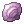

Garronath
| Garronath | |
|---|---|
| Element: | Poison |
| Race: | Dragon |
| Size: | Large |
| Rank: | ☆☆ |
| Defense: | 500 |
| Magic Defense: | 80 |
| LUK: | 410 |
| Temperaments: | Aggressive Blood Thirsty |
Garronath is a poison wyvern found during High Rank Hunts at the Savage Coast.
It is seen in habitating either the Highland or Forest biomes on the island (zones 4, 5, 6, 7, 8, 9 or 10).
Carves
| Item | % Chance (per carve) | Description |
|---|---|---|
 Poison Dragon Talon Poison Dragon Talon |
47% | A talon cut from the wings of Garronath.
It is surprisingly sharp and was once indispensable for hunting. |
 Poison Dragon Claw Poison Dragon Claw |
33% | A claw cut from a limb belonging to Garronath.
Its hard, curved structure is smooth to touch but must be handled with care. |
 Poison Dragon Venom Poison Dragon Venom |
20% | Bottled venom gathered from Garronath.
It will seep through and destroy most surfaces when poured. |
| 4th carve (100% chance) | Quantity | Description |
|  Violet Gem | 5~10 (Random) | A gem found deep within Garronath.
It possesses an interesting shape and a relatively polished texture. |
Every 9 Monster Kills, you'll be able to obtain a Special Carver which will allow you to acquire a Special Drop on your next carve, at 100% chance.
You can also get a Special Carver after any hunt, with a low chance.
| Special Carver | Special Drop |
|---|---|
| Head Severer |  Garronath Head Garronath Head
|
Skills
Killing Cloud
- Garronath casts
 Killing Cloud on a random target.
Killing Cloud on a random target.
Fester
- A stacking debuff that can be applied by Festering Winds and Poisonous Spit. It can stack up to 7 times.
- Every few seconds, while affected by Fester, the player will take a portion of its maximum HP. The more stacks a player has, the higher this percentage is.
- Fester will gradually fade away, one stack at a time and can be resisted by Poison Resistance.
Fire Spit
- Garronath targets any player, except the one with the highest Aggro. Flames then engulf the target three times before Garronath launches the long range fire elemental attack towards its location.
Poisonous Spit
- Garronath marks a target and deploy an AoE around it that explodes within a small delay.
- Getting caught in the explosion builds up 2 Fester stacks.
- This ability becomes stronger after Garronath rages.
Dragoon Jump
- Garronath pushes all players back from him, becoming immune to damage before taking a flight. After a few seconds, the dragon viciously plunges towards the party, crashing into the ground. Anyone hit by the dragon is Stunned and takes massive damage.
- Quickly after the first attack, Garronath flaps his wings, taking flight again and preparing for a second attack. This time, he targets the person with the highest Aggro.
- As the dragon lands, he has a small chance of hurting himself, rendering him vulnerable.
- This ability becomes stronger after Garronath rages.
Wind Shield
- Garronath gathers energy to create a barrier of wind around him, which can deflect long range attacks with ease. The chance to miss increases as you get further away from the dragon.
- While Wind Shield is active, Garronath reduces damage taken by 35% and attackers can get knocked back.
- This skill can be stopped during the wind up by damaging the dragon enough, so that it loses its focus.
- This ability becomes stronger after Garronath rages.
Festering Winds
- Garronath pulls all party members within the vicinity towards him and peppers the area with 3x3 overlapping poison cloud AoEs that explode within a small delay. After two casts, the third affects an area of 5x5.
- Getting caught in the small explosions builds up 1 Fester stack on the player.
- During Festering Winds, Garronath takes 145% damage from melee attacks and 110% damage from ranged and magical attacks.
- This ability becomes stronger after Garronath rages.
Firestorm
- Garronath pushes all players back from him, becoming immune to damage before taking a flight. During the flight, Garronath marks a player and shoots meteors in his direction.
- Garronath can change targets periodically within this sequence and returns to its original position after using this skill.
- Damage can be reduced by Fire Resistance and MDEF.
- This ability becomes stronger after Garronath rages.
Spiny Scales
- After a long windup animation, Garronath scatters his poisonous scales in all directions. The neurotoxin affects how the body functions, rendering anyone hit by this attack gets Confused and unable to use abilities.
- This ability becomes stronger after Garronath rages.
Tips
- Fester can stack up to 7 times, with each stack increasing the damage exponentially. This means it deals low damage at a lower amount of stacks, but becomes deadlier the more stacks you have.
- Try to avoid Garronath's poison clouds until the effect fades away to not stack it further.
- As damage is based on a percentage of the player's maximum HP, Tanks might find themselves on a tricky situation if they let Fester build up, even with high resistance or high HP amounts to spare.
- Fester's damage can be reduced by a Poison property armor, making
 Argiope Card a cheap, effective armor card option.
Argiope Card a cheap, effective armor card option.
 Cure and
Cure and  Detoxify can remove a single Fester stack when used.
Detoxify can remove a single Fester stack when used.
- Knowing this, a
 Poporing Card or an
Poporing Card or an  Obeaune Card can come in handy when fighting Garronath.
Obeaune Card can come in handy when fighting Garronath.
- Knowing this, a
 Slow Poison can also reduce the damage over time effect from Fester by 50%, making it a worthwhile skill to have prepared when facing him.
Slow Poison can also reduce the damage over time effect from Fester by 50%, making it a worthwhile skill to have prepared when facing him.
- Using a
 Fireproof Potion is recommended to deal with Garronath's Firestorm, with no real downsides.
Fireproof Potion is recommended to deal with Garronath's Firestorm, with no real downsides.
- Wind Shield can break if you dealt enough damage while Garronath was casting it. He won't be able to cast other skills during it, making this the best damage window the dragon will give you.
| Monster Hunting | ||
|---|---|---|
| Low Rank Hunts • High Rank Hunts | ||
| Hunting Mechanics | Rage • Hate • Skills • Alterations | |
| Player Roles | Tank • Damage • Healer • Utility | |
| Monsters |
1-Star Hunts | Garanth • Nyia |
| 2-Star Hunts | Garronath • Nysori | |
| 3-Star Hunts | Angnar • Zaedronath | |
| Unreleased | Sybaris • Vakaris • Hrungnir • Anko & Mako | |
| Regular Monsters | Ambient Monsters | |
| Rewards | Shadow Gear (Low Rank, High Rank (1/2-star), Angnar, Zaedronath) • Shadow Gear Refinement
Archangel Wings • Fallen Angel Wings • Ancient Hero • Temporal Armors • Violet Halo • Magical Booster • Bio Weapon Helms | |
| Gathering & Combinations | Mining • Fishing • Foraging • Combinations | |
| Lore | The Savage Coast • The Wyvern • Astrid • Seruel • Delphina • Sain • Will • Reidin Kurs | |